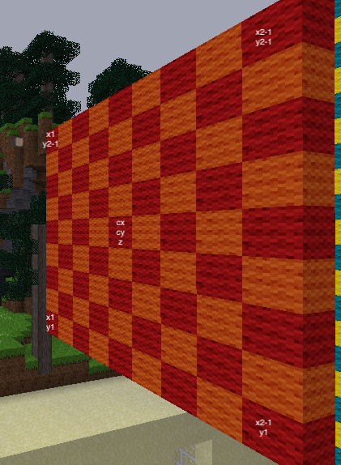

Construct a vertical square shape of alternating wool colours in the sky with height of 9 blocks
Because the colours are alternating you can't set them all in one build command.
The first challenge will be to work out where to start building the square. Try drawing the square as a grid on a piece of paper and labelling the x and y coordinates of each grid location. That will tell you what x1 and y1 should be. If you can turn it into a formula based on centre position then you can easily build new squares just by providing a new cx, cy and width/height.
The second challenge is how to specify a different wool colour each time a node is set. There are several ways to do this and each one is correct. One solution can be achieved in one command. Use the hints to see if you can work it out.
Another solution is to draw the whole square in one colour first and then step in twos to replace individual blocks with the other colour.
Another solution is to keep track of the last colour used in a variable and
then use if/else conditional logic to ensure the other
colour is used next time.
Or maybe you can think of another way of doing it. The choice is yours
